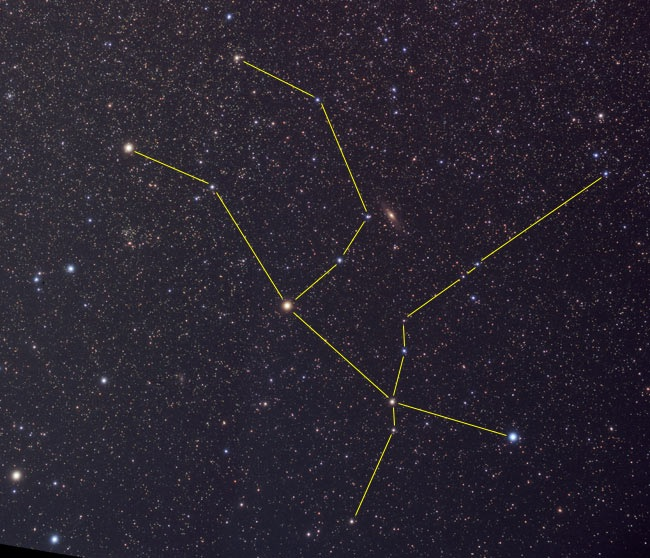
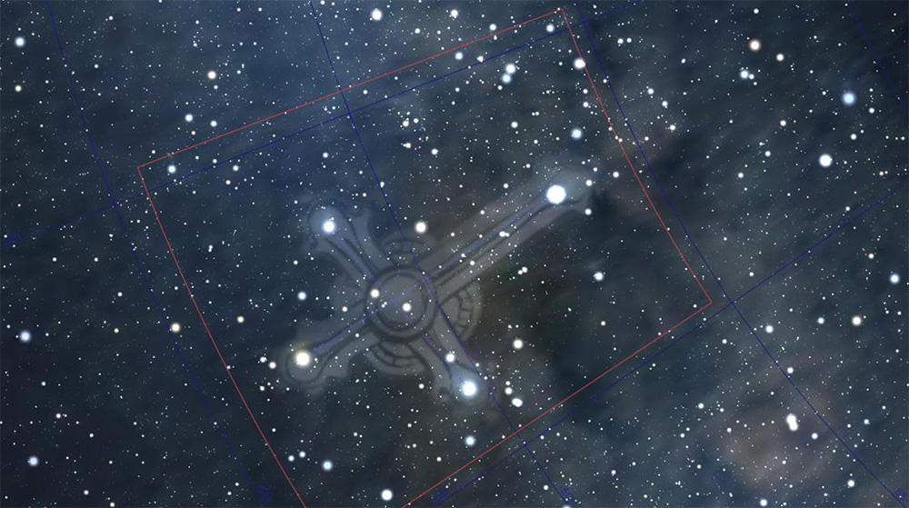
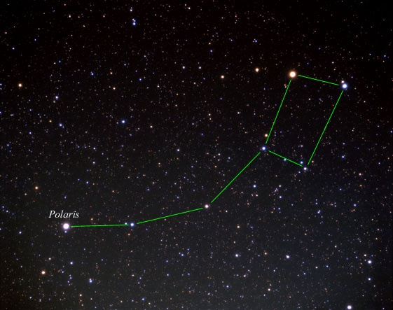
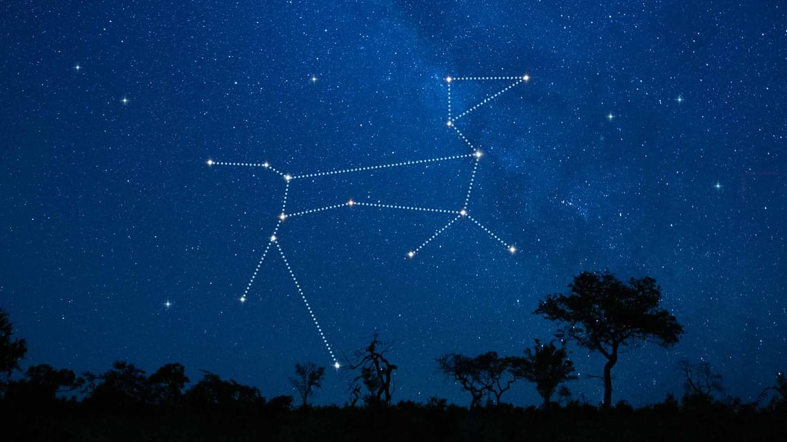
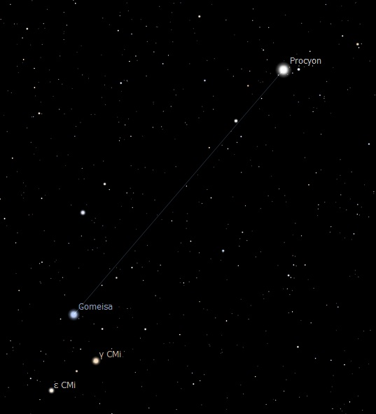
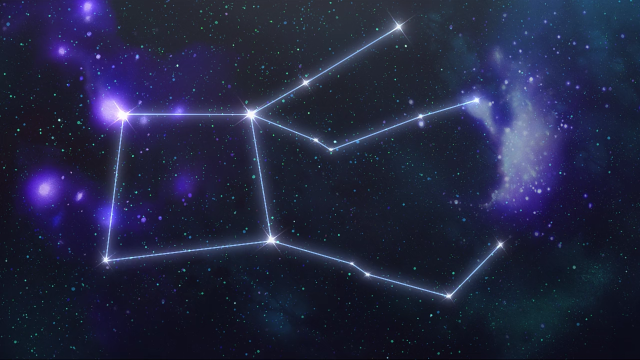
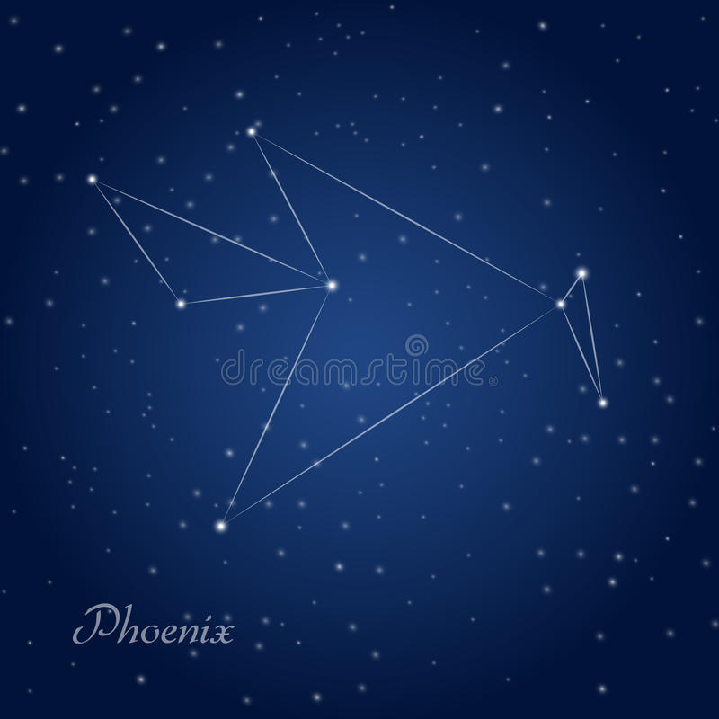
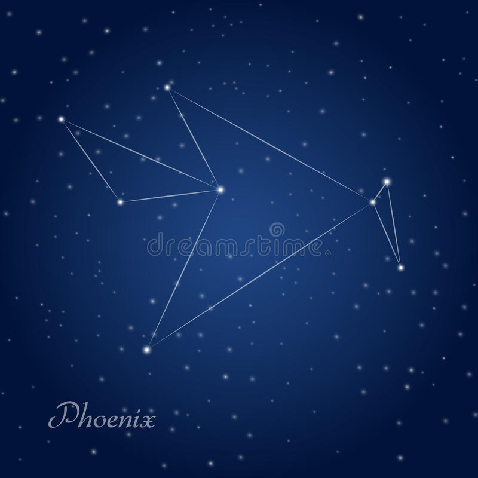
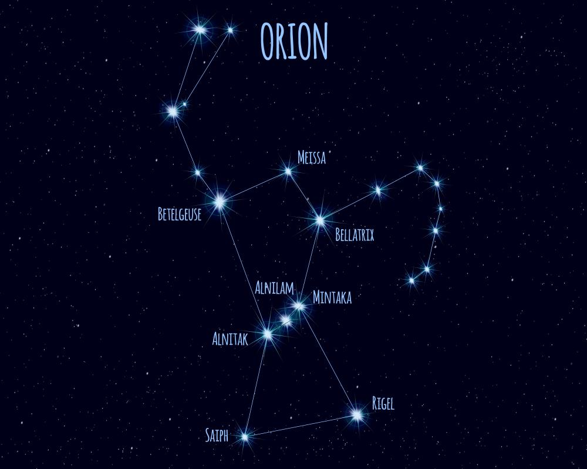

Andrômeda
Foto da constelação

A constelação de Andrômeda consiste em 16 estrelas visíveis no céu do Norte. Nomeada pelos gregos antigos em
homenagem à princesa mitológica de Andrômeda, a constelação contém a Galáxia de Andrômeda, a galáxia mais
próxima da nossa Via Láctea.
Andrômeda é uma das 48 constelações descritas pelo astrônomo grego antigo Claudius Ptolomeu em 150 d.C. em sua
famosa obra "O Almagesto".
Cruzeiro do Sul
Foto da constelação

O nome Cruzeiro do Sul foi instituído apenas em 1617, através de estudos empreendidos por Augustin Royer. Os
braços da cruz desenhada no céu são formados por quatro estrelas de primeira grandeza. A constelação
catalogada por Ptolomeu se caracteriza por poder ser usada como um ótimo relógio.
Ursa Maior
Foto da constelação

A Ursa Maior é uma grande e famosa constelação do hemisfério celestial norte. O genitivo em latim, usado
para formar nomes de estrelas, é Ursae Majoris. As constelações vizinhas, segundo a padronização atual, são
o Dragão, a Girafa, o Lince, o Leão Menor, o Leão, a Cabeleira de Berenice, os Pegureiros e o Boeiro.
Ursa Menor
Foto da constelação

Ursa Minor, a Ursa Menor, é uma constelação do hemisfério celestial norte. O genitivo, usado para formar
nomes de estrelas, é Ursae Minoris. As constelações vizinhas são a Ursa Maior, o Cefeu, a Girafa e o Dragão.
Cão Maior
Foto da constelação

A Galáxia Anã do Cão Maior é uma galáxia satélite da Via Láctea situada na constelação do Cão Maior. De
entre todas as componentes conhecidas do Grupo Local é atualmente considerada a mais próxima da nossa.
Cão Menor
Foto da constelação

Cão Menor, chamado também de Canis Minor, é uma pequena constelação do hemisfério celestial norte,
"espremida" entre o equador celeste e a eclíptica. O genitivo, usado para formar nomes de estrelas, é Canis
Minoris. Procyon é a estrela mais brilhante.
Pégaso
Foto da constelação

Pegasus, o Cavalo Alado, é uma constelação do hemisfério celestial norte. O genitivo, usado para formar
nomes de estrelas, é Pegasi. As constelações vizinhas são Andromeda, Lacerta, Cygnus, Vulpecula, Delphinus,
Equuleus, situando-se a norte de Aquarius e Pisces.
Fênix
Foto da constelação

Phoenix, a Fênix, é uma constelação do hemisfério celestial sul. O genitivo, usado para formar nomes de
estrelas, é Phoenicis. Sua estrela mais brilhante é Alpha Phoenicis.

Phoenix, a Fênix, é uma constelação do hemisfério celestial sul. O genitivo, usado para formar nomes de
estrelas, é Phoenicis. Sua estrela mais brilhante é Alpha Phoenicis.
Constelação de Órion
Foto da constelação

Órion, Oríon ou Orion é uma das oitenta e oito constelações modernas. O genitivo, usado para formar nomes de
estrelas, é Orionis. Está localizada no equador celeste e, por este motivo, é visível em praticamente todas as
regiões habitadas da Terra.